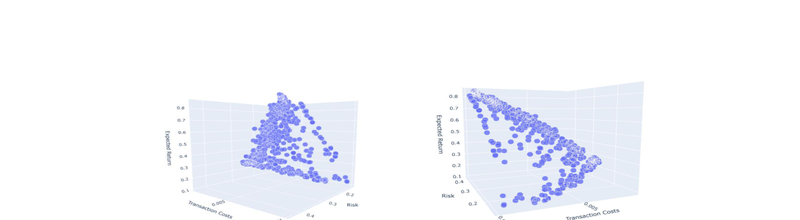
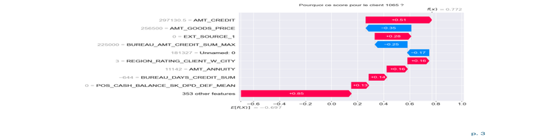

Optimisation Multi-critère de Portefeuille Financier
Optimisation d’un portefeuille d’actifs boursiers sur 9 ans de données historiques (2015–2024),
en combinant le modèle de Markowitz et l’algorithme évolutionnaire NSGA-II pour gérer trois objectifs
simultanés : maximiser le rendement, minimiser le risque et réduire les coûts de transaction.
Une interface Streamlit interactive permet d’explorer les fronts de Pareto 3D.
Une simulation Monte Carlo complète l’analyse de robustesse du portefeuille sélectionné.
- Optimisation multi-objectif : NSGA-II, front de Pareto 3D
- Modèle moyenne–variance de Markowitz
- Simulation Monte Carlo & analyse de robustesse
- Interface Streamlit + visualisations Plotly
- Python (NumPy, SciPy, DEAP)

Outil de Credit Scoring & Démarche MLOps
Développement d’un pipeline MLOps complet de credit scoring sur le dataset Home Credit Default Risk :
feature engineering métier, entraînement de modèles de classification, optimisation du seuil
de décision sur une métrique métier personnalisée, et déploiement via FastAPI conteneurisé avec Docker.
L’explicabilité est assurée par SHAP (global & local) et toutes les expériences sont tracées avec MLflow.
- Machine Learning : LightGBM, XGBoost, optimisation de seuil métier
- Explicabilité SHAP (importance globale & explication par client)
- Suivi MLflow & model registry (versioning, comparaison de runs)
- Déploiement API FastAPI + conteneurisation Docker
- Dashboard Streamlit pour utilisateurs non techniques
Stage d’été au Café Pop – Auriol
Travail en cuisine dans un café/bar/restaurant en forte activité le soir et le week-end :
préparation des plats, gestion du coup de feu, coordination avec l’équipe de service et respect
des contraintes d’hygiène et de timing.
- Gestion du stress et du travail sous pression
- Esprit d’équipe et communication opérationnelle
- Sens des priorités, rigueur et fiabilité
Projet “ERASMUS life in Budapest”
Conception d’un site web pour héberger des blogs d’étudiants en mobilité ERASMUS, en lien avec
un semestre à l’Obuda University (Computer Science, bases de données, programmation).
- Développement web et structuration de contenu
- Gestion de projet et collaboration internationale
- Communication et rédaction en anglais
Tutorat élève-élève en Guyane française
Accompagnement scolaire personnalisé en mathématiques, français et anglais pour deux enfants
de niveau primaire, avec préparation de supports et suivi régulier des progrès.
- Pédagogie et vulgarisation de notions techniques
- Patience, écoute et adaptation au niveau de l’élève
- Sens de la responsabilité et de l’engagement
Synthèse des compétences développées
Ces expériences, en optimisation mathématique, en machine learning et MLOps, en développement web,
en restauration et en engagement bénévole, m’ont permis de construire un socle de compétences
à la fois techniques et transversales, utiles à chaque étape de mon parcours d’ingénieur en
informatique, réseaux et intelligence artificielle.
Compétences humaines
- Gestion du stress et des imprévus
- Travail en équipe et communication
- Organisation, priorisation et autonomie
- Empathie, pédagogie et écoute
Compétences techniques
- Machine Learning & MLOps (LightGBM, XGBoost, MLflow, Docker, FastAPI)
- Optimisation multi-objectif et algorithmes évolutionnaires (NSGA-II, DEAP)
- Explicabilité de modèles IA (SHAP global & local)
- Développement web et structuration de contenu
- Approche projet (objectifs, planning, livrables)
- Culture informatique internationale (ERASMUS)
En lien avec mon projet professionnel
Mon objectif est de travailler comme ingénieur en informatique et réseaux, avec une forte spécialisation
en intelligence artificielle et en ingénierie des données. Les deux projets académiques de décembre 2025
s’inscrivent directement dans cette trajectoire : le projet de credit scoring m’a permis de construire
un pipeline MLOps de bout en bout — de la donnée brute au déploiement conteneurisé — en mobilisant
des outils du monde professionnel (MLflow, FastAPI, Docker, SHAP), tandis que le projet d’optimisation
de portefeuille m’a confronté à la résolution de problèmes d’optimisation complexes à plusieurs objectifs,
domaine central en recherche opérationnelle et en systèmes décisionnels.
Ces deux projets illustrent également ma capacité à produire des livrables complets et documentés :
rapports techniques structurés, interfaces utilisateur (Streamlit), API REST et visualisations avancées
(Plotly, SHAP). Ils renforcent ma maîtrise de Python comme outil d’ingénierie à part entière,
au-delà du simple scripting.
Le travail en cuisine au Café Pop m’a appris à gérer la pression, à être fiable et à collaborer
efficacement — des qualités directement transposables en contexte de production informatique et
dans les équipes agiles. Le projet ERASMUS et mon semestre à Budapest renforcent ma capacité à
évoluer dans des environnements techniques internationaux et à communiquer en anglais avec des
profils variés. Enfin, le tutorat bénévole illustre ma capacité à expliquer clairement des notions
complexes, qualité indispensable pour travailler avec des équipes pluridisciplinaires ou vulgariser
des technologies comme l’IA auprès d’utilisateurs non techniques.
L’ensemble de ces expériences alimente une posture professionnelle tournée vers la rigueur technique,
la collaboration et la pédagogie — en cohérence avec les attentes du métier d’ingénieur IA/Data.